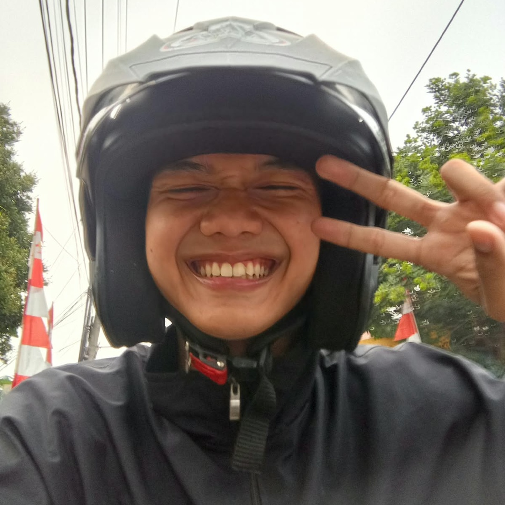

Biodata

Muhammad Khairul Fadilah
Student of STT Terpadu Nurul Fikri
| NIM | : 0110226104 |
|---|---|
| Major | : Informatics Engineering |
| class | : TI-01 |
| Address | : Cibinong, Kabupaten Bogor |
| No.Telp | : 085779865135 |
Informatics Engineering Student

Student of STT Terpadu Nurul Fikri
| NIM | : 0110226104 |
|---|---|
| Major | : Informatics Engineering |
| class | : TI-01 |
| Address | : Cibinong, Kabupaten Bogor |
| No.Telp | : 085779865135 |